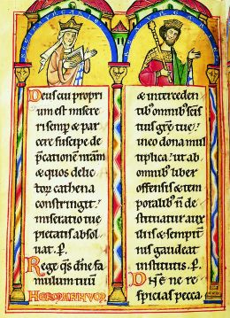
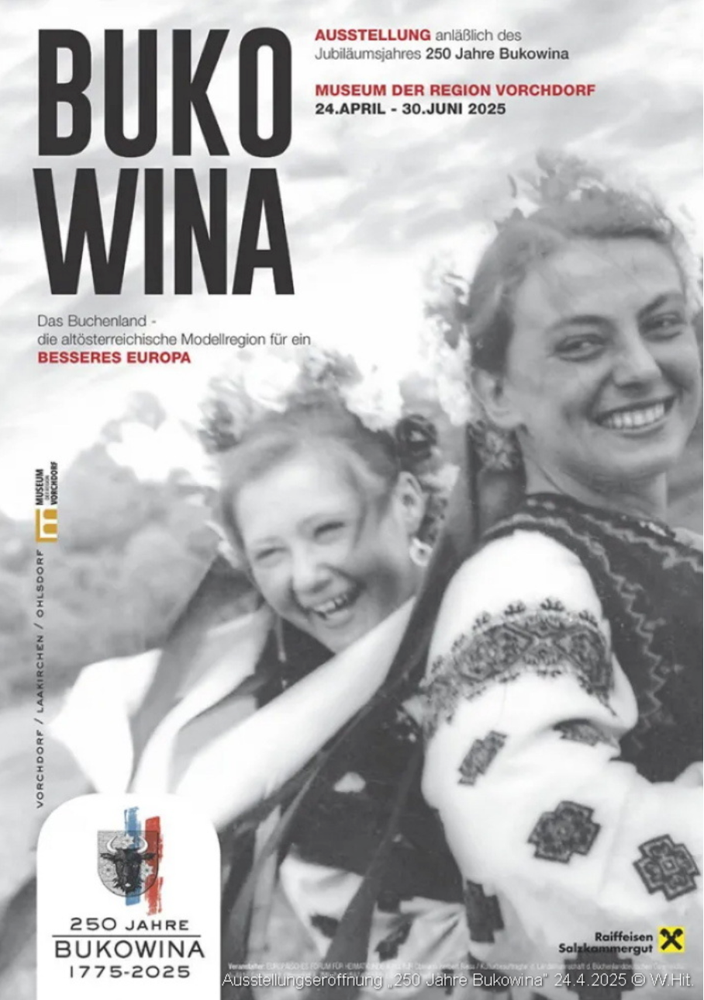
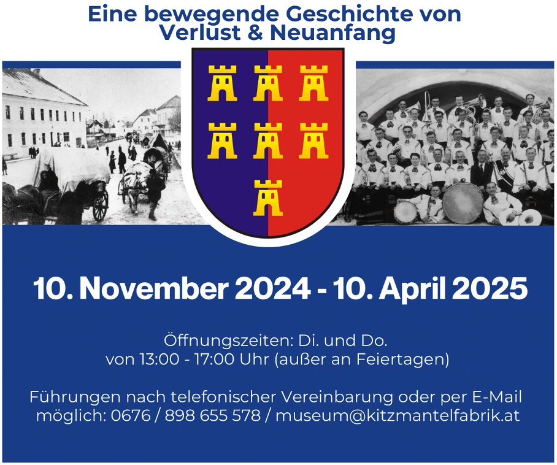
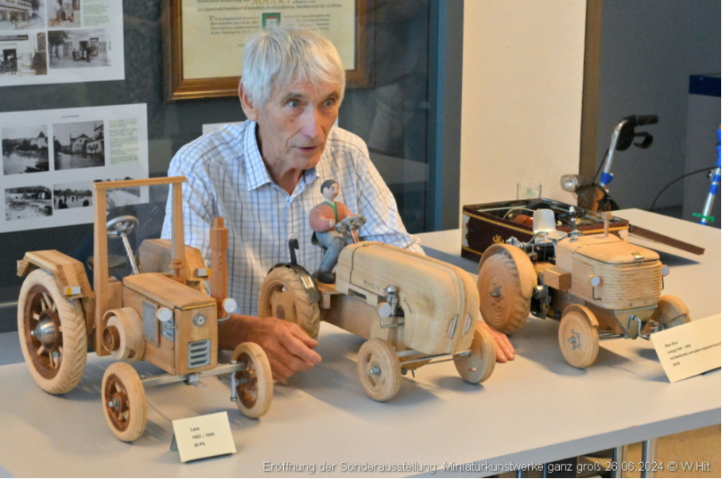
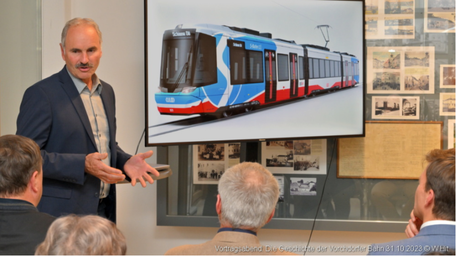
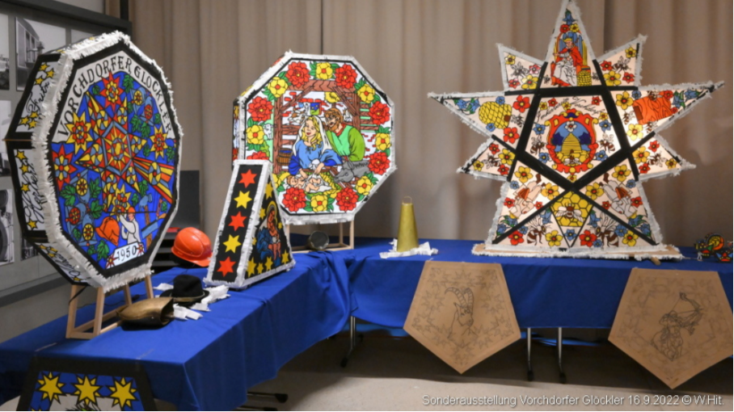
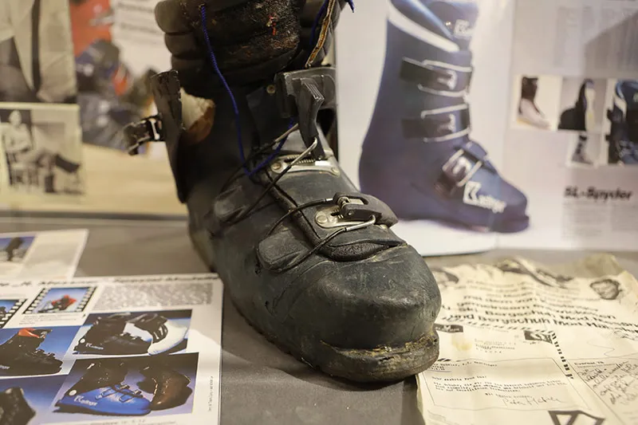
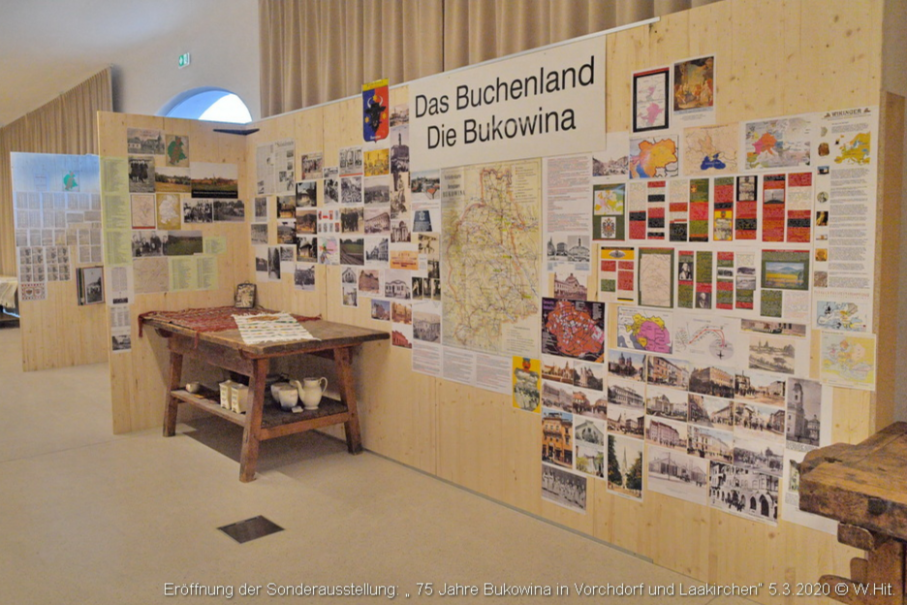
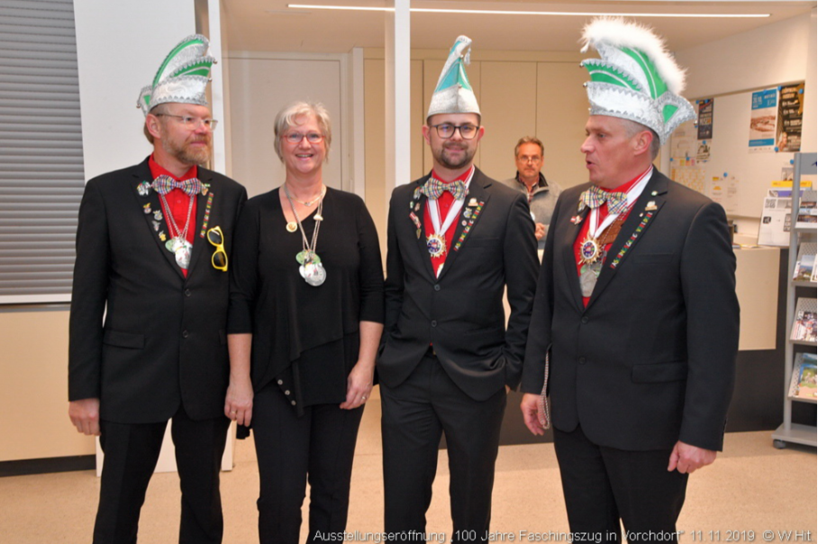
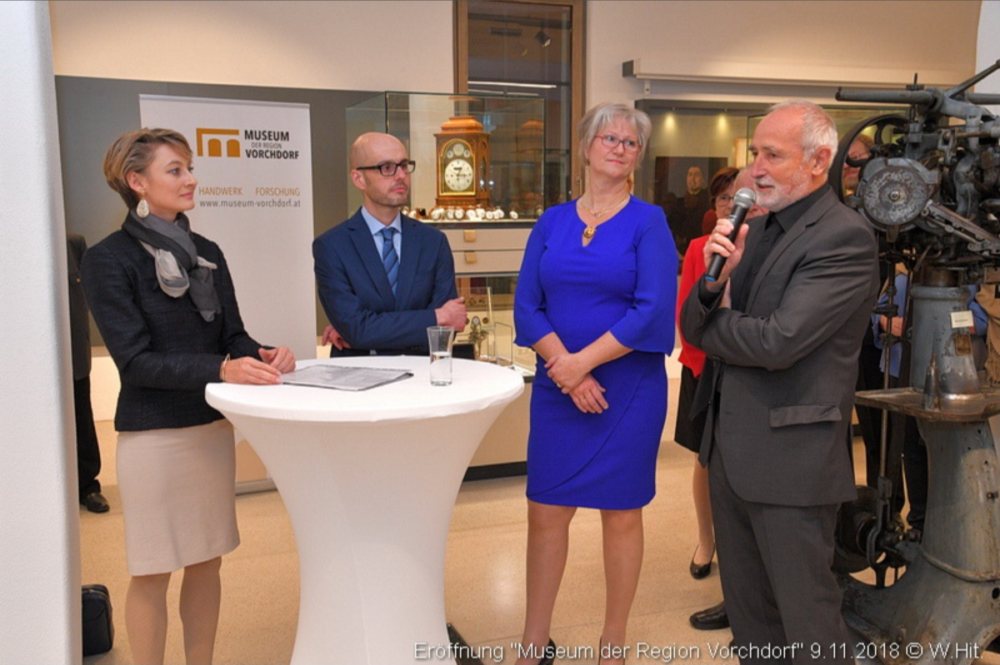

800 Jahre Recht & Verfassung der Siebenbürger Sachsen
Ein einzigartiges mittelalterliches Dokument - das "Andreanum" von 1224 - gewährte den deutschen Siedlern in Siebenbürgen weitreichende Rechte und prägte ihr Leben über Jahrhunderte. Entdecken Sie, wie dieses Erbe bis heute nachwirkt!
Wanderausstellung des Deutschen Kulturforums östliches Europa in Zusammenarbeit mit dem Department für interethnische Beziehungen der Regierung Rumäniens.

Abgelaufen250 Jahre Bukowina
Die bewegte Geschichte der Buchenlanddeutschen, die ab 1775 unter den Habsburgern in der Bukowina angesiedelt wurden. Die Ausstellung beleuchtet das friedliche multiethnische Zusammenleben, die Umsiedlung während des 2. Weltkriegs und den Neuanfang in Laakirchen, Ohlsdorf und Vorchdorf. Fotogalerie →
Kuratiert von Herbert Riess

Abgelaufen80 Jahre Siebenbürger Sachsen in Vorchdorf
Am 16. November 1944 erreichten die Siebenbürger Sachsen aus Tschippendorf auf der Flucht vor den Kriegsgeschehnissen Vorchdorf und fanden hier eine neue Heimat. Die Ausstellung erzählt von bewegenden Schicksalen, dem Verlust der alten Heimat und dem Aufbau eines neuen Lebens. Mehr Informationen →

AbgelaufenMiniaturkunstwerke ganz groß
Ein einzigartiger Einblick in die faszinierende Welt der Miniaturen. Diese besondere Sonderausstellung zeigte kunstvolle Kleinodien und ihre Geschichten. Fotogalerie →

Abgelaufen120 Jahre Lokalbahn Lambach-Vorchdorf-Eggenberg
Eine Hommage an 120 Jahre Eisenbahngeschichte in unserer Region. Die Ausstellung dokumentierte die Entwicklung der Lokalbahn und ihre Bedeutung für die Region Vorchdorf. Eröffnung → | Geschichte der Vorchdorfer Bahn →

AbgelaufenVorchdorf Glöckler
Eine faszinierende Ausstellung über die einzigartige Glöcklertradition in Vorchdorf. Die kunstvoollen Kappen und das traditionelle Brauchtum stehen im Mittelpunkt dieser beeindruckenden Präsentation des regionalen Kulturerbes. Fotogalerie →

AbgelaufenMit Ski und Bergschuh - Hersteller Kastinger
Die Geschichte des renommierten Schuhproduzenten Kastinger, der mit hochwertigen Ski- und Bergschuhen internationale Erfolge feierte. Eine Ausstellung über österreichische Industriegeschichte und Handwerkskunst. Mehr Informationen →

Abgelaufen75 Jahre Bukowina in Vorchdorf und Laakirchen
Eine bewegende Ausstellung zum 75-jährigen Jubiläum der Ankunft der Bukowinadeutschen in Vorchdorf und Laakirchen. Die Ausstellung erzählt von Flucht, Vertreibung und dem Neuanfang in der neuen Heimat. Fotogalerie →

Abgelaufen100 Jahre Fasching
in Vorchdorf
Eine bunte Ausstellung über die traditionsreiche Faschingstradition in Vorchdorf. Von historischen Kostümen über Faschingsumzüge bis zu den Bräuchen der Narrenzeit - die Ausstellung zeigte die lebendige Faschingskultur unserer Gemeinde. Fotogalerie →

AbgelaufenMuseumseröffnung in der Kitzmantelfabrik
Die Wiedereröffnung des Museums am neuen Standort Kitzmantelfabrik war ein historisches Ereignis für Vorchdorf. Mit einer dreitägigen Eröffnungsveranstaltung am 10., 11. und 17. November 2018 öffneten sich die Türen für das neue Museum und den Fabrikssaal zum ersten Mal. Fotogalerie Eröffnung → | Tag der offenen Tür 10.11.18 → | Gedenkmatinee 11.11.18 → | Galaabend 17.11.18 →